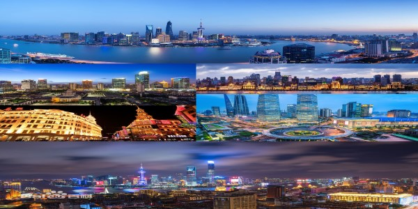
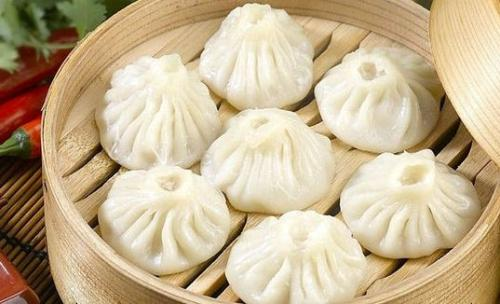
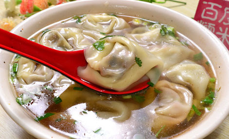

My name's Yichen Yang. I am from Shanghai,China. Shanghai is one of the four municipality cities in China. Shanghai is becoming the international economy, finance, trade, shipping, technological innovation center.
Shanghai has a total area of 6340 square kilometers. It has over 16 municipal districts and the climate there is subtropical humid monsoon climate.Shanghai's GDP ranks first in China's cities and second in Asian cities, second only to Tokyo , Japan . Shanghai is one of the world's most famous financial centers , with the largest population and largest metropolitan area in the world.
Shanghai’s local dishes refer to Shanghai’s local flavors, which can be served with concentrated red sauce.(Oil is rich in flavor, heavy in sugar, bright in color). Commonly used cooking methods are mainly braised, braised, and sugary. The taste is salty and sweet, oily and not greasy.
In the local cooking, the specialties in the leek are oily paste , oily prawn , oily crab , pot roast , braised circle , bergamot, braised back fish , yellow chestnut chicken, etc. The characteristics of the vegetable thick oil red sauce. Shanghai vegetables have a variety of seasonal dishes depending on the season. Malan Head , Chives , Chicken Cabbage , Shanghai Rape, etc. are very refreshing. The citizens are early - the four King Kong: big cake, fried dough sticks, risotto rice , bean curd paste .
 